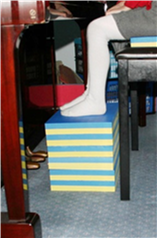
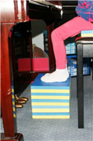
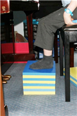
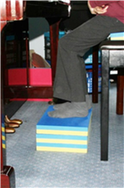
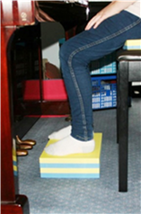
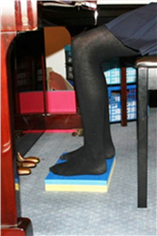
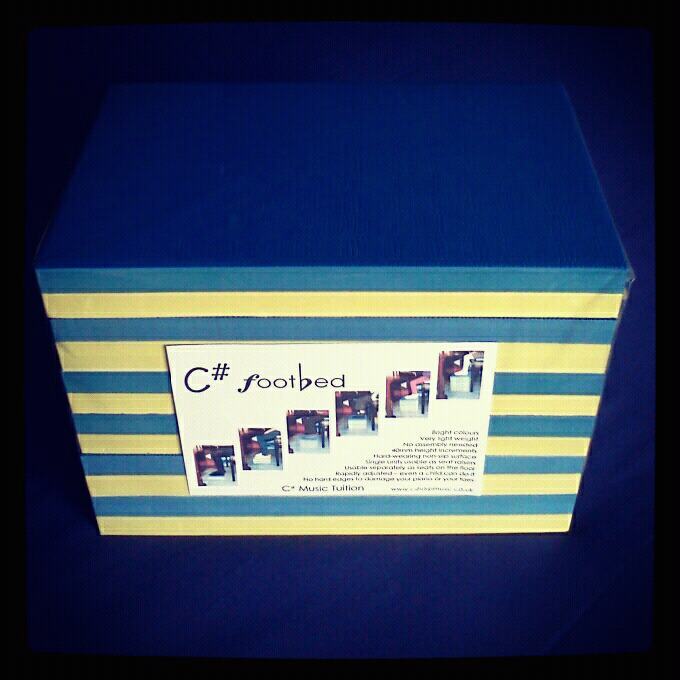

Products by Claire
Inspired by her experiences teaching young children to play the piano, Claire has created the "C# Footbed" - an adaptable piano footstool that shrinks as your child grows!
  
  
The importance to a Pianist of having their feet firmly planted cannot be understated - it is one of the basic requirements for a good posture, which, in turn, greatly affects one's ability to play well. Children, of course, cannot always reach the floor, and require correctly-sized support for their feet.
Having surveyed the market on behalf of her pupils and found it wanting, Claire has developed, tested, and brought to market what we think is an ideal solution - a lightweight, non-slip, multi-layered, rubber block footstool that children can adjust themselves. It won't damage your piano, and the blocks can be adjusted in 40mm height increments.

Priced at £59 + £10 P&P to UK Mainland, you can order your C# Footbed by contacting Claire.
Other products by Claire are in development and due to be launched shortly.